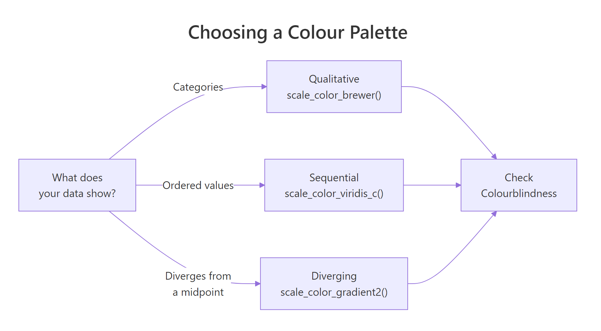
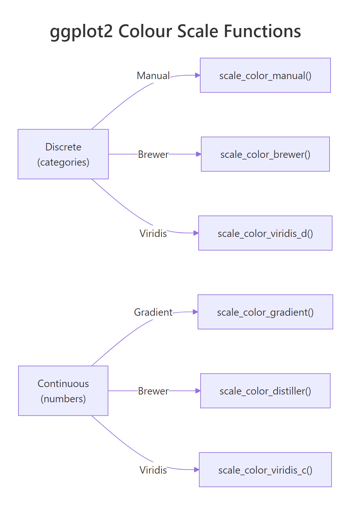
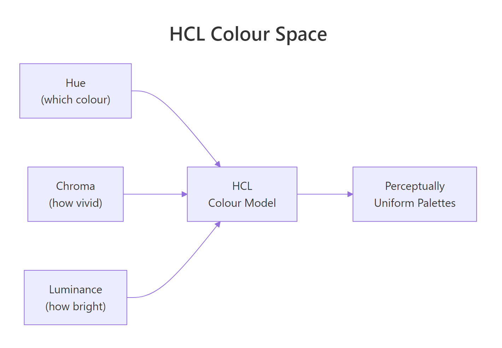

ggplot2 Colours: Choose Palettes That Are Beautiful, Accessible, and Honest
Colour in ggplot2 controls how viewers read your data — the right palette highlights patterns, respects colour-blind readers, and avoids misleading gradients.
Introduction
A chart with a bad colour palette can mislead your audience or exclude readers who see colour differently. Colour is not decoration. It encodes meaning, and the wrong encoding distorts your message.
ggplot2 gives you a powerful colour system built on a simple idea: map a data variable to a colour aesthetic, and a scale function translates values into colours. You pick the scale function that matches your data type and your communication goal.
In this tutorial you will learn how to choose the right palette for your data (qualitative, sequential, or diverging), apply it with the correct scale_color_*() or scale_fill_*() function, set custom colours for brand or publication needs, and test your chart for colour-blindness safety. All code runs in your browser — no setup required.

Figure 1: Decision flow for choosing a colour palette by data type.
How does ggplot2 map data to colours?
Every colour in a ggplot2 chart starts with a mapping inside aes(). When you write aes(color = some_variable), ggplot2 inspects the variable type and picks a default palette automatically. Factors and characters get a discrete palette. Numeric variables get a continuous gradient.
Let's load the packages we need and see the default behaviour on the built-in mpg dataset.
The mpg dataset has 234 rows of fuel economy data. The class column is categorical (7 car types) and hwy is continuous (highway miles per gallon). Let's map each to colour.
ggplot2 assigned a different hue to each of the 7 car classes. The default discrete palette spreads colours evenly around the colour wheel, which works well for up to about 8 categories.
For the continuous variable hwy, ggplot2 used a dark-to-light blue gradient. Higher highway MPG appears as lighter blue. Notice how the legend changed from distinct swatches to a continuous colour bar.

Figure 2: ggplot2 colour scale functions for discrete and continuous data.
class(your_variable).Try it: Map drv (drive type: f, r, 4) to colour instead of class. How many colours appear?
Click to reveal solution
Explanation: drv has 3 unique values, so ggplot2 assigns 3 discrete colours.
How do you set custom colours with scale_color_manual()?
Sometimes the default palette is not enough. You need exact colours for brand guidelines, journal requirements, or to match a specific meaning (red for danger, green for safe). That is when you reach for scale_color_manual().
The function takes a values argument — a vector of colours. You can use colour names ("steelblue"), hex codes ("#E41A1C"), or a named vector that maps each level to a specific colour.
Using a named vector is safer than a positional vector. With a named vector, each colour sticks to its level regardless of the order ggplot2 encounters the levels. A positional vector assigns colours by the alphabetical order of levels, which can silently break if your data changes.
c("compact" = "#1B9E77", "suv" = "#7570B3") is explicit and future-proof.The fill variant works the same way. Use scale_fill_manual() for bar charts, boxplots, and any geom that uses the fill aesthetic.
The colours match exactly because we reused the same named vector. The fill aesthetic controls the inside colour of bars, while color controls the border.
Try it: Create a bar chart of drv with 3 custom hex colours of your choice.
Click to reveal solution
Explanation: Each hex code maps to one level of drv. The named vector ensures "4" always gets red, regardless of factor ordering.
When should you use ColorBrewer palettes?
Cynthia Brewer designed the ColorBrewer palettes for cartography, but they are among the best-tested palettes for any data visualisation. They come in three types, each matched to a data situation.
Qualitative palettes (e.g., "Set2", "Dark2", "Paired") use distinct hues with similar brightness. They work for unordered categories like country, species, or car class.
Sequential palettes (e.g., "Blues", "YlOrRd", "Greens") go from light to dark in one hue. They show ordered data where more means more — population density, temperature, count.
Diverging palettes (e.g., "RdBu", "PiYG", "BrBG") have two hues that diverge from a neutral midpoint. They show data that has a meaningful centre — profit/loss, above/below average, positive/negative correlation.
Let's apply a qualitative Brewer palette to our scatter plot.
"Set2" is a popular qualitative palette because its pastel tones are easy on the eyes and distinct enough for 7 categories. It is also one of the safer palettes for colour-blind viewers.
You can explore all available palettes with RColorBrewer::display.brewer.all(), or check the palette info table.
The colorblind column tells you which palettes are safe for colour-blind viewers. "Dark2", "Paired", and most diverging palettes score TRUE.
Now let's try a diverging palette for data that has a natural midpoint. We will create a variable that measures each car's MPG relative to the group mean.
Blue dots sit above average highway MPG, red dots below. The neutral midpoint (zero deviation) appears as a pale centre. Notice we used scale_color_distiller() — the continuous version of scale_color_brewer() — because hwy_dev is numeric.
Try it: Apply the diverging "PiYG" palette to the same plot. What colour represents above-average MPG now?
Click to reveal solution
Explanation: "PiYG" stands for Pink-Yellow-Green. With direction = 1, high values map to green and low values to pink.
Why is viridis the default choice for continuous data?
Most colour palettes have a hidden problem: they are not perceptually uniform. A step from yellow to green looks bigger than a step from blue to purple, even if the data difference is the same. The viridis family of palettes solves this by varying luminance (brightness) monotonically from dark to light.
This gives viridis three practical advantages. It still works when printed in greyscale, because brightness alone carries the information. It is robust to the most common forms of colour blindness (deuteranopia and protanopia). And it represents data honestly — equal data steps produce equal perceptual steps.

Figure 3: The three dimensions of HCL colour space — hue (which colour), chroma (how vivid), and luminance (how bright). Viridis varies luminance monotonically.
The viridis package ships with 8 palette options: "viridis" (D), "magma" (A), "inferno" (B), "plasma" (C), "cividis" (E), "rocket" (F), "mako" (G), and "turbo" (H). Let's apply viridis to a continuous variable.
Dark purple represents the lowest highway MPG values, bright yellow the highest. The smooth luminance gradient makes it easy to read the ordering even at a glance.
Viridis also works for discrete data. Use scale_color_viridis_d() or scale_fill_viridis_d() for factors.
The plasma palette runs from deep purple through pink to yellow. Each of the 7 car classes gets a distinct colour along that gradient.
Let's see all 8 viridis options side by side using the show_col() function from the scales package.
Each row of swatches goes from dark to light. That monotonic luminance change is what makes these palettes work in greyscale and for colour-blind readers.
Try it: Apply the "mako" option to a continuous colour scale. Then try "turbo". Which one varies luminance more smoothly?
Click to reveal solution
Explanation: "mako" varies luminance smoothly from dark to light. "turbo" is a rainbow-like palette that does not vary luminance monotonically — it is included for backward compatibility but is not recommended for honest data representation.
How do you check a chart for colour blindness?
About 8% of men and 0.5% of women have some form of colour vision deficiency. The most common type is deuteranopia (red-green colour blindness), where red and green appear as similar shades of brown or olive. If your chart relies on red-green contrast, a significant fraction of your audience will miss the pattern.
The simplest check is to look at your palette's luminance values. If two colours have different hues but the same brightness, a colour-blind viewer may not distinguish them. Viridis avoids this by design. But what about custom palettes?
Let's extract the default ggplot2 hue palette and check it.
The default palette uses red, green, cyan, and purple. Red and green are the most dangerous pair for colour-blind viewers. Let's compare with a viridis palette of the same size.
The viridis colours differ not just in hue but in brightness. Even if two hues look similar to a colour-blind viewer, the luminance difference keeps them distinguishable. That is the key principle: vary brightness, not just colour.
Here are practical rules for colour-blind-safe charts:
- Use viridis or ColorBrewer palettes marked
colorblind = TRUE - Limit discrete colours to 6-8 maximum
- Add
shapeas a redundant aesthetic:aes(color = group, shape = group) - Test your palette by converting it to greyscale — if two colours merge, they will also merge for many colour-blind viewers
Red and green have similar greyscale brightness (90 vs 128), but they are more distinguishable than you might expect. The real danger zone is when two colours produce greyscale values within 20 points of each other. When that happens, swap one colour.
Try it: Check whether the "Dark2" Brewer palette (4 colours) has distinct greyscale values.
Click to reveal solution
Explanation: The values are close but not identical. "Dark2" relies on hue differences more than luminance. For maximum safety, pair it with a shape aesthetic.
Common Mistakes and How to Fix Them
Mistake 1: Using a qualitative palette for ordered data
:x: Wrong:
Why it is wrong: "Set2" assigns unrelated hues to each level. A reader cannot tell that 8 cylinders > 6 > 5 > 4 from the colours alone.
:white_check_mark: Correct:
Mistake 2: Using rainbow or jet palettes
:x: Wrong:
Why it is wrong: Rainbow palettes have uneven luminance. The yellow band looks brighter than blue or red, making mid-range values appear more prominent than they are. The palette also fails completely in greyscale.
:white_check_mark: Correct:
Mistake 3: Using scale_color_brewer() on continuous data
:x: Wrong:
Why it is wrong: scale_color_brewer() expects discrete (factor/character) data. For continuous data, you need scale_color_distiller() (interpolates Brewer palettes) or scale_color_fermenter() (binned Brewer palettes).
:white_check_mark: Correct:
Mistake 4: Putting a fixed colour inside aes()
:x: Wrong:
Why it is wrong: Anything inside aes() is interpreted as a data mapping. The string "blue" becomes a single-level factor, and ggplot2 maps it to the first default colour (salmon red).
:white_check_mark: Correct:
Mistake 5: Too many discrete colours
:x: Wrong:
Why it is wrong: Humans can reliably distinguish about 6-8 colours at once. Beyond that, the chart becomes a guessing game between the legend and the data.
:white_check_mark: Correct:
Practice Exercises
Exercise 1: Scatter plot with Brewer palette and redundant shapes
Build a scatter plot of mpg with hwy on the y-axis and displ on the x-axis. Colour by drv (drive type) using the "Dark2" Brewer palette. Add shape = drv as a redundant encoding for colour-blind safety.
Click to reveal solution
Explanation: Mapping both color and shape to the same variable creates a redundant encoding. A viewer who cannot distinguish the colours can still read the shapes. ggplot2 merges the two legends into one automatically.
Exercise 2: Heatmap with viridis continuous scale
Create a tile plot using geom_tile() on the built-in faithfuld dataset (waiting on x, eruptions on y, density as fill). Apply scale_fill_viridis_c() with the "inferno" option. Customise the legend title to "Density" and set breaks at 0.01 and 0.02.
Click to reveal solution
Explanation: faithfuld is a 2D density estimate of Old Faithful geyser data. The "inferno" palette runs from black (low density) through red and orange to yellow (high density). Custom breaks at 0.01 and 0.02 highlight the key density thresholds.
Exercise 3: Custom diverging palette centred on zero
Create sample data where values diverge from zero: data.frame(x = 1:20, y = rnorm(20)). Plot with geom_col() and apply scale_fill_gradient2() with blue for negative, white for zero, and red for positive. Set midpoint = 0.
Click to reveal solution
Explanation: scale_fill_gradient2() creates a three-colour gradient. The midpoint argument controls where the neutral colour (white) sits. This is ideal for profit/loss, residuals, or any data where deviation from a reference point matters.
Putting It All Together
Let's build a publication-quality chart that applies everything from this tutorial: viridis for perception, shape for redundancy, and a clean theme.
This chart encodes three variables: engine displacement (x-axis), highway MPG (y-axis), city MPG (viridis colour), and drive type (shape). The viridis palette ensures the colour gradient is honest and accessible. The shape aesthetic provides a redundant channel for drive type, so colour-blind viewers can still identify front-wheel, rear-wheel, and four-wheel drive.
The alpha = 0.8 adds slight transparency to reduce overplotting. The minimal theme removes chart junk, and the bold title draws the eye to the message.
facet_wrap() instead of cramming everything into one panel.Summary
| Scale Function | Data Type | Palette Source | Best For |
|---|---|---|---|
scale_color_manual() |
Discrete | Your hex codes or colour names | Brand colours, exact specifications |
scale_color_brewer() |
Discrete | ColorBrewer (qualitative, sequential, diverging) | Publication-quality categorical plots |
scale_color_distiller() |
Continuous | ColorBrewer (interpolated) | Continuous data with Brewer aesthetics |
scale_color_viridis_d() |
Discrete | Viridis (8 options) | Accessible discrete palettes |
scale_color_viridis_c() |
Continuous | Viridis (8 options) | Default for continuous data |
scale_color_gradient() |
Continuous | Two-colour custom gradient | Simple low-to-high gradients |
scale_color_gradient2() |
Continuous | Three-colour custom gradient | Diverging data with a midpoint |
Key takeaways:
- Match palette type to data type: qualitative for categories, sequential for ordered, diverging for centred
- Viridis is the safest default for continuous data — perceptually uniform, greyscale-safe, colour-blind-robust
- Use named vectors with
scale_color_manual()so colours stick to their levels - Add shape or label as a redundant channel for colour-blind safety
- Test your palette by checking greyscale brightness values
FAQ
What is the difference between color and fill in ggplot2? color controls the outline or stroke of a geom (points, lines, polygon borders). fill controls the interior (bars, boxes, polygon areas). Most geoms use one or the other, but some (like geom_bar()) support both. Use scale_color_*() for colour aesthetics and scale_fill_*() for fill aesthetics.
How do I reverse a colour palette? For Brewer palettes, add direction = -1 inside the scale function: scale_color_brewer(palette = "Blues", direction = -1). For viridis, use the same argument: scale_color_viridis_c(direction = -1). For manual palettes, reverse your vector with rev().
Can I use hex codes with scale_color_manual()? Yes. scale_color_manual(values = c("#E41A1C", "#377EB8", "#4DAF4A")) works perfectly. You can mix hex codes and named colours in the same vector: c("steelblue", "#E41A1C", "forestgreen").
How many discrete colours can I use before the chart becomes unreadable? The practical limit is 6-8 colours. Beyond that, viewers struggle to match colours between the legend and the data points. If you have more than 8 categories, consider grouping small categories into "Other", using facets, or switching to direct labels instead of a legend.
Why does scale_color_brewer() fail on continuous data? scale_color_brewer() is designed for discrete (factor or character) data only. For continuous data, use scale_color_distiller() (smooth interpolation of Brewer palettes) or scale_color_fermenter() (binned Brewer palettes). The naming follows ggplot2 convention: brewer = discrete, distiller = continuous, fermenter = binned.
References
- Wickham, H. — ggplot2: Elegant Graphics for Data Analysis, 3rd Edition. Chapter 11: Colour Scales and Legends. Link
- ggplot2 documentation — scale_colour_viridis_d() reference. Link
- ggplot2 documentation — scale_colour_brewer() reference. Link
- Brewer, C.A. — ColorBrewer 2.0: Color Advice for Cartography. Link
- Garnier, S. — Introduction to the viridis color maps (CRAN vignette). Link
- Okabe, M. & Ito, K. — Color Universal Design: How to make figures and presentations that are friendly to Colorblind people (2008). Link
- R Core Team — grDevices: Colors and palettes. Link
Continue Learning
- ggplot2 Tutorial — A complete introduction to building plots with ggplot2, from geoms to facets
- ggplot2 Theme Customization — Control fonts, backgrounds, axes, and every visual element of your chart